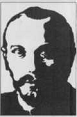

Mikhail Bakhtin 1920’lerde başlayıp 1975’teki ölümüne dek Sovyetler Birliği’nde sürdürdüğü çalışmalarla Avrupa ve ABD’nin 1980 sonrası entelektüel ortamına damgasını vurmuş bir insan bilimleri ve dil felsefecisi, kültür ve edebiyat kuramcısıdır. Bu konulardaki tartışmalara 60’larda egemen olan yapısalcı ve 70’lerde yaygınlık kazanan yapısalcılık sonrası yaklaşımların sınırlarının belirlenip aşılması yolundaki çabaların en güçlü, en verimli esin kaynağı olmuştur. Yapıtlarını, kendisinden habersiz, hatta kendisinden sonra geliştirilmiş birçok kurama verilmiş yanıtlar olarak okumak mümkündür. Biçimciliğe ve yapısalcılığa yanıtında tarihselliği ve sözün toplumsal yaşamını; yapısalcılık sonrası antihümanist kuşkuculuğa yanıtında da bağlamsallığı ve toplumsal bir ütopyayı kavramlaştırmanın dilini oluşturmuştur. Marksist eleştiriye, kaba indirgemeciliğe direnen, dilin ve edebiyatın toplumsal yaşamı kurma işlevini vurgulayan bir boyut katmıştır. Günümüzde feminist, postkolonyalist, Marksist eleştiri söylemlerinde, kültür çalışmaları alanında, Bakhtin’in diyalog ve karnaval kavramlarına değinmeden ilerleyen bir tartışma bulmak zordur.
Bu derleme için seçilen yazılarda incelenen alan edebiyat, tanımlananlar ise tür, karnaval ve romandır. Edebiyatta özgün yaratıyla onu mümkün kılan verili anlam dünyası, tek bir söz edimiyle bütün bir dil, şimdiyle geçmiş, tür kavramı içinde birbirine dokunur. Karnaval, edebiyatla edebiyat dışının maksimum temas noktasıdır. Romandaysa tür ve karnaval kavramları kesişir. Edebiyat türleri de edebiyat dışı söz türleri de karnavalımsı bir kural tanımazlıkla roman içinde birbirleriyle haşır neşir olur, çatışır. Bu iç içe geçiş ve kural tanımazlık zorunlu olarak her bir türün kendi bütünlüğünü ve kurallarını sarsar, geleneksel anlamıyla tür kavramının alaşağı edilmesine neden olur. Karnavalın sunduğu hazzın kaynağında, sözün somut gerçeklikle bağlarını yeniden keşfedişi yatmaktadır.
Ayrıntı Yayınları olarak “sözün yaşama dokunduğu anın yazarı” Bakhtin’i, edebiyat teorisinin bu dev kalemini ilk kez Türkçeye kazandırmaktan gurur duyuyor; Marksizm ve Dil Felsefesi, Edebiyatın Yaratılışı, Edebiyat Kuramı ve Edebiyat Olarak Hayat'la beraber okunmasını öneriyoruz...
Bakhtin’in kuramı, yapısalcılık sonrası dönemde hayat olup olmadığını merak etmeye başlayan edebiyat eleştirmenlerine yeni bir umut verdi.
David Lodge
Mikhail Bakhtin, insan bilimleri alanındaki en önemli Sovyet düşünürü ve yirminci yüzyılın en büyük edebiyat kuramcısıdır.
Tzvetan Todorov
AYRINTI İNCELEME ISBN 975-539-338-2
mikhail bakhtin
1895 yılında doğan Mikhail Bakhtin’in yaşamı üzerine bilinenler bölük pürçüktür. Birinci Dünya Savaşı yıllarında Jakobson, Tinianov, Tomaşevski gibi Rus biçimcilerinden etkilenmiş ve onların yazgılarına ortak olmuştur. Bakhtin’in ilk önemli yapıtı Dostoyevs- ki Poetikasının Sorunları, söz konusu yazın ve düşün adamlarının Sovyetler Birliği’nin I917’den sonraki kültür politikası ve siyasal tercihine muhalif olmaları nedeniyle gözden düşmelerinden sonra yayımlanmıştı. 1929’da bir yargılamaya uğrayan Bakhtin’in beş yıl bir toplama kampında kaldığı sanılıyor. 1938’de sağlık nedeniyle cezası sürgüne çevrilerek küçük bir kasabaya gönderilen Bakhtin on beş yıl kadar Saransk Eğitim Ens- titüsü'nde çalıştı. 1959'da yine sağlık sorunlarına bağlı olarak Moskova’ya yerleşen yazar, 1975 yılında bir yaşlılarevinde sessiz sedasız öldü. Yaşamı boyunca kendi imzasıyla ancak iki yapıtı yayımlanabilen Bakhtin’in, izleyicileri olan Medvedev ile Voloşi- nov’un adlarını da kullandığı öne sürülmekte ve özellikle Voloşinov’un Marksizm ve Dil Felsefesi adlı kitabı ona mal edilmektedir. Dil felsefesiyle çok yalandan ilgilenen Bakhtin, bu yapıtta oldukça geniş kapsamlı bir dilbilimsel çözümlemeye de girişmiş; yaşadığı dönem içinde metodolojik yönden en üst düzeyde bir yetkinliğe erişmiştir. Burada en can alıcı nokta Bakhtin'in diyalog ve monolog içinde tek bir sözcüğün farklı durumlarını saptamasıdır. Çağdaşları genellikle bir cümlenin sınırları içinde kalırken onun çözümlemesi “söylem” kavramını ortaya atmaktadır. Bakhtin için söylem kadar söylemin oluşum koşulları da çok önemlidir. Bu saptama dilbilim ve göstergebilim bağlamında sözün gerçekleşim süreciyle, “sözceleme" (enunciation) olgusuyla ilgilidir. Bu süreç anlatım ayrılıklarını bir yana bıraktıktan sonra üç temel veriyi içerir: İki konuşucudan her ikisinin de paylaştığı ve her ikisi için de geçerli olan bir değerlendirme biçimi. Dilsel bildirişimin gerçekleşmesi için bu üç koşulun üçünün de gerekli olduğunu savunanlara göre sözceleme ya da sözce (utterance) üretme ediminin (performance) ayırıcı nitelikleri ile dilsel bildirişimin ayırıcı nitelikleri özdeştir. Bundan da -Bakhtin’e ait olduğuna inanılan- Marksizm ve Dil Felsefesi adlı yapıtta belirtilen şu sonuçlar çıkar: Hiçbir sözce, yalnızca söyleyene bağlı kalmaz; söyleyenle dinleyen arasındaki karşılıklı etkileşim sonucunda oluşur. Her söylem, belli bir kültürel çevrede üretilmiş ve üretilmekte olan tüm söylemlerle bağıntılıdır ve bağımsız söyleyen bulunmadığı gibi, bağımsız söylem de olmaz.
Bakhtin yazınbilim bağlamı içinde “tür” sorununu da çözümlemeye çalışmıştır. Ona göre sanatçı gerçeği türün gözleriyle görmeyi öğrenmeli, değişik türler arasındaki ayrılıkları belirlemeli ve böylece her türün özgül niteliklerini ortaya çıkarmalıdır. Türler evrimler geçirir, değişik biçimlere girer; ama her zaman “geçmişini anımsar”. Evrimin birliğini ve sürekliliğini sağlayan, “yaratıcı bellek”tir. Türün hem tarihsel hem de toplumsal bir nitelik taşıdığını böylece saptayan Bakhtin, “edebiyatın karnavallaştırılması” kavramını geliştirir.
Bakhtin'e göre Kutsal kitaplarda ve dinsel törenlerde yansıyan resmi ortaçağ ideolojisi Tanrı'nın merkez olarak kabul edildiği iç kapayıcı bir eskatologya (ölümden sonraki yaşam) görüşüne sahipti. Bunun tam karşısında ise popüler törenler ve festivaller, özellikle karnavallar, panayırlardaki komik gösteriler, yakası açılmadık küfürler ve yeminlerde kendini gösteren halkın mizah evreni vardı. Bütünüyle ele alındığında bu “karnaval” biçimleri, bazı panayır gösterilerinde İsa ya da Meryem yerine eşek yerleştirip Hıristiyan ideolojisinin evrenini “merkezsizleştiriyorlardı”. Böylece halkın mizah duygusu resmi ideolojiden apayrı bir dünya oluşturmakta ve bir anlamda da resmi ideoloji törensel biçimde “taçsızlandırılmaktaydı”.
Bakhtin’in başlıca yapıtları şunlardır: Problemi tvorçevstva Dostoyevskoğo, 1929, (“Dostoyevski Poetikasının Sorunları”); Tvorçestva Fransua Rable i narndnuyu kııltura sredrıevekovya Rörıesansa, 1965, (“Rabelais ve Evreni”); Voprosı literaturı i estetiki, 1975, (“Edebiyat ve Estetik Sorunları”); Esthétique et théorie du roman, 1978, (“Romanın Estetiği ve Kuramı”); Estetika slovesnoğo tvorçestva, 1979, (“Sözsel Sanatın Estetiği”); The Dialogic Imagination, 1981, (“Diyalojik İmgelem”).
Ayrıntı: 330 İnceleme dizisi: 171
Karnavaldan Romana Edebiyat Teorisinden Dil Felsefesine Seçme Yazılar Mikhail Bakhtin
İngilizceden çeviren Cem Soydemir
Yayıma hazırlayan Mehmet Küçük
Son okuma Sibel Irzık
Bu derleme şu kitaplardan derlenmiştir The Dialogic Imagination; Speech Genres & Other Late Essays;
Rabelais and his World; Problems of Dostoevsky’s Poetics
Bu çevirinin Türkçe yayım hakları Ayrıntı Yayınları'na aittir.
Kapak illüstrasyonu Sevin ç Altan
Kapak düzeni Arslan Kahraman
Düzelti Sait Kızılırmak
Baskı ve cilt
Mart Matbaacılık Sanatları Ltd. Şti. (0 212) 212 03 39 (pb.x)
Birinci basım 2001 Baskı adedi 2000
ISBN 975-539-338-2 AYRINTI YAYINLARI
Dizdariye Çeşmesi Sk. No: 23/1 34400 Çemberlitaş-İstanbul Tel: (0 212) 518 76 19 Faks: (0 212) 516 45 77
Mikhail Bakhtin
Karnavaldan Romana
Edebiyat Teorisinden Dil Felsefesine Seçme Yazılar
İNCELEME DİZİSİ ŞENLİKLİ TOPLUM//, Illich M YEŞİL POLİTİKA/J. Porritt ■* MARKS, FREUD VE GÜNLÜK HAYATIN ELEŞTİRİSİ/B. Brovm ■* KADINLIK ARZULARI/R. Coward ■* FREUD’DAN LACAN’A PSİKANALİZ/S. M. Tura ■* NASIL SOSYALİZM? HANGİ YEŞİL? NİÇİN TİNSELLİK?//?. Bahro ANTROPOLOJİK AÇIDAN ŞİDDET/Der: D. Riches * ELEŞTİREL AİLE KURAMI/M. Poster ■* İKİBİN'E DOĞRU//?. Williams ■* DEMOKRASİ ARAYIŞINDA KENT* Bumin YARIN/fl. Havemann ■* DEVLETE KARŞI TOPLUM//5. Clastres ■* RUSYA’DA SOVYETLER (1905-1921)/0. Anweüer ■* BOLŞEVİKLER VE İŞÇİ DENETİMİ/M. Brinton * EDEBİYAT KURAMI/T Eagleton ■* İKİ FARKLI SİYASET/L Köker * ÖZGÜR EĞİTIMU. Spring * EZİLENLERİN PEDAGOJİSİ/P. Freire ■* SANAYİ SONRASI ÜTOPYALAR/B. Frankel İŞKENCEYİ DURDURUNl/T Akçam * ZORUNLU EĞİTİME HAYIRI/C. Baker * SESSİZ YIĞINLARIN GÖLGESİNDE YA DA TOPLUMSALIN SONU/J. Baudrillard * ÖZGÜR BİR TOPLUMDA BİLİM/P Feyerabend
* VAHŞİ SAVAŞÇININ MUTSUZLUĞU/R Clastres ■* CEHENNEME ÖVGÜ/G. Vassal * GÖSTERİ TOPLUMU VE YORUMLAR/G. Debord ■*’ AĞIR ÇEKİM/L. Segai CİNSEL ŞİDDET/A Godenzi * ALTERNATİF TEKNOLOJİ/D. Dickson ATEŞ VE GÜNEŞ//. Murdoch OTORİTE/fl, Sennett ■* TOTALİTARİZM/S. Tormey ■* İSLAM'IN BİLİNÇALTINDA KADIN/P Ayt Sabbah
* MEDYA VE DEMOKRASİ/J. Keane ÇOCUK HAKLARI/Der: 8. Franklin * ÇÖKÜŞTEN SONRAIDer: fi. Blackburn * DÜNYANIN BATILILAŞMASI/S. Latouche * TÜRKİYE’NİN BATILILAŞTIRILMASI/C. Aktar ■* SINIRLARI YIKMAK/M. Mellor * KAPİTALİZM. SOSYALİZM. EKOLOJİ/A. Gorz AVRUPAMERKEZCİLİK/S. Amin AHLAK VE MODERNLİK/fi. Pooie * GÜNDELİK HAYAT KILAVUZU/S. Willis * SİVİL TOPLUM VE OEVLET/Der. J. Keane TELEVİZYON: ÖLDÜREN EĞLENCE/N. Postman * MODERNLİĞİN SONUÇLARI/A. Giddens -* DAHA AZ DEVLET DAHA ÇOK TOPLUM/R. Cantzen * GELECEĞE BAKMAK/M. Albert - fi. Hahnet * MEDYA. DEVLET VE ULUS/P. Schlesinger * MAHREMİYETİN DÖNÜŞÜMÜ/A. Giddens TARİH VE TİN/J. Kovel ■* ÖZGÜRLÜĞÜN EKOLOJİSİ/M. Bookchin * DEMOKRASİ VE SİVİL TOPLUM/J. Keane ŞU HAİN KALPLERİMİZ//?. Coward ■* AKLA VEDA/P Feyerabend BEYİN İĞFAL ŞEBEKESİ/A. Mattelart * İKTİSADİ AKLIN ELEŞTİRİSİ/A. Gorz MODERNLİĞİN SIKINTILARI/C. Taylor * GÜÇLÜ DEMOKRASİ/B. Barber * ÇEKİRGE/8. Suits * KÖTÜLÜĞÜN ŞEFFAFLIĞI/J. Baudrillard ENTELEKTÜEL/E Said * TUHAF HAVA/Afioss YENİ ZAMANLAR/S. HalIM Jacques * TAHAKKÜM VE DİRENİŞ SANATLARI/J.C. Scott SAĞLIĞIN GASPI//. Illich * SEVGİNİN BİLGELİĞİM. Finkielkraut * KİMLİK VE FARKLILIK/W. Connolly * ANTİPOLİTİK ÇAĞDA POLİTİKA/G. Mülgan YENİ BİR SOL ÜZERİNE TARTIŞMALAR/M. Wainwright ■* DEMOKRASİ VE KAPİTALİZM/S. Bowles-H. Gintis * OLUMSALLIK, İRONİ VE DAYANIŞMA//?. Rorty OTOMOBİLİN EKOLOJİSİ/P Fre- und-G. Martin ■* ÖPÜŞME, GIDIKLANMA VE SIKILMA ÜZERİNE/A Phillips * İMKÂNSIZIN POLİTİKASİ/J.M Besnier GENÇLER İÇİN HAYAT BİLGİSİ EL KİTABI//?. Vaneigem * CENNETİN DİBİ/G. Vassal * EKOLOJİK BİR TOPLUMA DOĞRU/M. Bookchin * İDEOLOJİ/r Eagleton * DÜZEN VE KALKINMA KISKACINDA TÜRKİYE/A. inseI * AMERİKA/J. Baudrillard * POSTMODERNİZM VE TÜKETİM KÜLTÜRÜ/M. Featherstone ERKEK AKIUG. Lloyd * BARBARLIK/M. Henry * KAMUSAL İNSANIN ÇÖKÜŞÜ/fl. Sennett ■* POPÜLER KÜLTÜRLER/D. Rowe * BELLEĞİNİ YİTİREN TOPLUM/flJacoty GÜLME/H. Bergson ■* ÖLÜME KARŞI HAYAT/N. O. Brown SİVİL İTAATSİZLİK/Der.; Vî Coşar AHLÂK ÜZERİNE TARTIŞMALAR/J. Nultall
TÜKETİM TOPLUMU« Baudrillard * EDEBİYAT VE KÖTÜLÜK/G. Bataille ÖLÜMCÜL HASTALIK UMUTSUZLUK/S. Kierkegaard ■* ORTAK BİR ŞEYLERİ OLMAYANLARIN ORTAKUĞI/A Lingis ■* VAKİT ÖLDÜRMEK/P Feyerabend ■* VATAN AŞ- Kl/M. Viroli * KİMLİK MEKÂNLARI/D. Mortey-K. Robins ■* DOSTLUK ÜZERİNE/S. Lynch KİŞİSEL İLİŞKİLER/H. LaFollette
* KADINLAR NEDEN YAZDIKLARI HER MEKTUBU GÖNDERMEZLER?/D. Leader DOKUNMA/G. Josipovici * İTİRAF EDİLEMEYEN CEMAAT/M. Blanchot * FLÖRT ÜZERİNE/A Phillips * FELSEFEYİ YAŞAMAK/fi. Bilington ■* POLİTİK KAMERA/M. Ryan-D. Kellner * CUMHURİYETÇİLİK/P Pettit POSTMODERN TEORİ/S. &S/-D. Kellner * MARKSİZM VE AHLÂK/S. Lukes ■* VAHŞETİ KAVRAMAK/J.P Reemtsma * SOSYOLOJİK DÜŞÜNMEK/Z. Bauman * POSTMOOERN ETİK/Z. Bauman * TOPLUMSAL CİNSİYET VE İKTİDAR//?.». Connell * ÇOKKÜLTURLÜ YURTTAŞLIK/IV. Kymlicka * KARŞIDEVRİM VE İSYAN/H. Marcuse * KUSURSUZ CİNAYET/J. Baudrillard TOPLUMUN McDONALDLAŞTIRILMASI/G. Ritzer KUSURSUZ NİHİLİST/«. A. Pearson ' HOŞGÖRÜ ÜZERİNE/M. Walzer ■* 21. YÜZYIL ANARŞİZMİ/Dffl-.: J. PurkisiJ. Bowen -* MARX’IN ÖZGÜRLÜK ETİĞİ/G. G. Brenkert ■* MEDYA VE GAZETECİLİKTE ETİK SORUNLAR/Der. A. Belseyi R. Chadwick ■* HAYATIN DEĞERİ/J. Harns POSTMODERNİZMİN YANILSAMALARI/T Eagleton * DÜNYAYI DEĞİŞTİRMEK ÜZERİNE/M. Löwy * ÖKÜZÜN A'SI/B. Sanders TAHAYYÜL GÜCÜNÜ YENİDEN DÜŞÜNMEK/D».: G. Robinson i J. Rundell * TUTKULU SOSYOLOJİ/A. Game S A. Netcalle EDEPSİZLİK, ANARŞİ VE GERÇEKLİK/G. Sartwell * KENTSİZ KENTLEŞME/M. Bookchin ■* YÖNTEME KARŞI/P. Feyerabend HAKİKAT OYUNLARI/J. Forrester * TOPLUMLAR NASIL ANIMSAR7/P Connerton * ÖLME HAKKI/S. inceoğlu ■* ANARŞİZMİN BUGÜNÜ/Der.. Hans-Jürgen Değen MELANKOLİ KADINDIR/D. Binkert * SİYAH 'AN LAR l-ll/J. Baudrillard * MODERNİZM, EVRENSELLİK VE BİREY/Ş. Benhabib KÜLTÜREL EMPERYALİZM/J. Tomlinson GÖZÜN VİCDANI//?. Sennett * KÜRESELLEŞME/Z. Bauman * ETİĞE GİRİŞ/A. Pieper * MEKÂNLARI TÜKETMEK/J. Urry * YAŞAMA SANATI/G. Şart»®// ^ ARZU ÇAĞIU Kovel * KOLONYALİZM POSTKOLONYALİZM/A. Loomba KREŞTEKİ YABANİ/A. Phillips -* ZAMAN ÜZERİNE/N. Elias ■* TARİHİN YAPISÖKÜMÜ/A. Munslow FREUD SAVAŞLARI/J. Forrester * ÖTEYE ADIM/M. Blanchot > POSTYAPISALCI ANARŞİZMİN SİYASET FELSEFESİ/T! May ■* ATEİZM//?. Le Poidem -*AŞK İLİŞKİLERİ/O.P Kernberg * POSTMODERNLİK VE HOŞNUTSUZLUKLARI/Z Bauman ■* ÖLÜMLÜLÜK, ÖLÜMSÜZLÜK VE DİĞER HAYAT STRATEJİLERİ/Z Bauman * TOPLUM VE BİLİNÇDIŞI/K. Leledakis BÜYÜSÜ BOZULMUŞ DÜNYAYI BÜYÜLEMEK/G. Ritzer * KAHKAHANIN ZAFERİ/fl. Sanders * EDEBİYATIN YARATILIŞI/f Dupont * PARÇALANMIŞ HAYAT/Z. Bauman ■* KÜLTÜREL BELLEK/J. Assmann * MARKSİZM VE DİL FELSEFESİ/U N. Voloşinov MARX’IN HAYALETLERİ/J. Derrida ■* ERDEM PEŞİNDE/A.Mac/nlyffi ■* DEVLETİN YENİDEN ÜRETİMİ/J. Stevens ÇAĞDAŞ SOSYAL BİLİMLER FELSEFESİ/B. Fay ■* KARNAVALDAN ROMANA/M. Bakhtin
HAZIRLANAN KİTAPLAR
PİYASA/J. O'Neil * ARMAĞANIN MANTIĞI/D«.: A Schritt J BİLİNÇALTINDA DEVLET/R. Lourau * YAŞAMA FELSEFESİ/A. Nehamas ■* POSTMODERN EDEBİYAT KURAMI/N. Lucy ■* FOUCAULT’NUN ÖZGÜRLÜK SERÜVENİ/J. W. Bemauer J NİETZSCHE: BİR AHLÂK KARŞITININ ETİĞİ/P. Berkowüz GENEL ETİK/A. Heller *